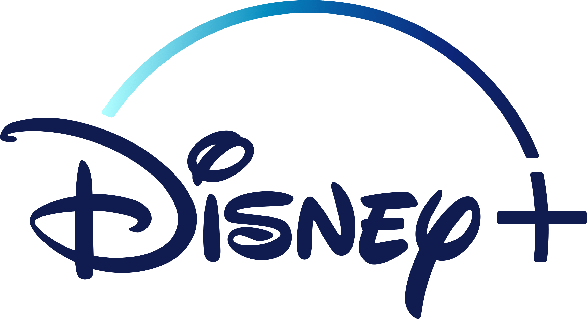
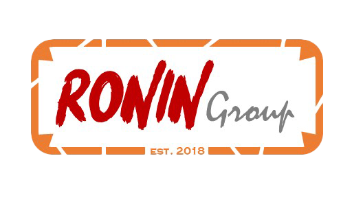
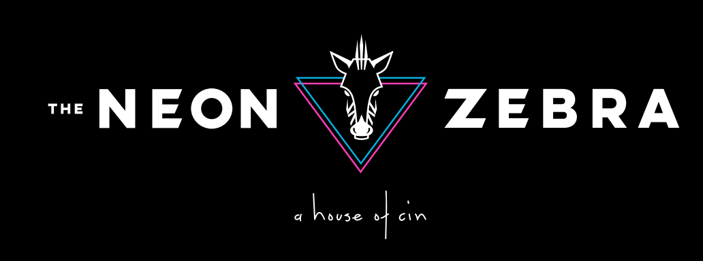

Career Achievements
- Successfully built and managed a team of 6 resources to manage various global accounts, resulting in improved efficiencies and operations of the technical account management team.
- Increased revenue and market share for Disney's DTC streaming services by negotiating over a dozen new distribution agreements with key partners and driving business terms to align with The Walt Disney Company's commercial objectives.
- Improved product offerings and increased customer satisfaction by developing strong relationships with global distribution partners and identifying new capabilities, features, and requirements to provide implementation recommendations to internal business, product, and technology teams.
- Increased revenue and market share for Disney's DTC streaming services by successfully driving key 2022 revenue initiatives with IAP partners, including planning and execution of Disney+ day intro offer, new territory market launches, price increases, and product features.
- Improved product offerings and increased customer satisfaction by leading integrations and technical due diligence on new platforms and influencing partners' future roadmaps.
- Improved customer experience and increased subscriber retention by collaborating with internal product and technology stakeholders to identify challenges and blocking issues that required resolution with third-party partners.
Key Results
Key Projects
Launch of Disney+ With Ads

Launched Disney+ Basic (ads) across 4 major global partners (Amazon, Google, Sony, and Microsoft), resulting in increased revenue streams and new subscribers for the Disney+ platform.

- Orchestrated the expansion of Paramount+ and Pluto TV into multiple new markets. Successfully managed a team overseeing operations and launch-related activities, contributing to strategic growth targets. Directed business priorities and operations while ensuring successful product and feature launches.
- Successfully expanded Paramount+ and Pluto TV into 40+ new markets, driving international growth for ViacomCBS' AVOD and SVOD products, resulting in record subscriber and MAU numbers for both services.
- Led a team of regional PMOs responsible for managing the operations and launch related activities for new markets, resulting in timely and successful launches of Paramount+ in LatAm and the Nordics, and the expansion of Pluto TV into Brazil, Spain, and France markets.
- Defined business priorities related to platform and feature expansion across AVOD and SVOD products, resulting in increased overall subscriber and MAUs, contributing directly to ViacomCBS' streaming goals.
- Oversaw all business operations of Pluto TV and Paramount+ internationally, ensuring alignment with strategic objectives, resulting in streamlined operations and increased revenue for both services.
- Successfully launched Paramount+ in LatAm and the Nordics on time and within scope, managing project timelines and budgets effectively, resulting in increased brand awareness and market share for ViacomCBS' streaming services.
- Managed projects that contributed directly to ViacomCBS' streaming goals, including platform and feature expansion, resulting in increased overall subscriber and MAUs, and revenue growth.
Key Results
Key Projects
Paramount+ International Launch

Successfully coordinated the operational launch of Paramount+ into its first international markets.
Pluto International Expansion

Successfully coordinated the international expansion of Pluto TV into international makerts such as EMEA and APAC.

- Founded an entertainment media group centered on revitalizing independent theater. Developed the Neon Zebra brand and negotiated leasing contracts, demonstrating business acumen and commitment to arts and culture. Despite challenging circumstances, exhibited resilience and continued to support the arts.
- Co-founded an entertainment media group with a focus on independent theater revitalization and support of the arts, demonstrating a commitment to cultural and community development.
- Developed The Neon Zebra brand as an independent movie theater in Stamford, CT, showcasing a keen eye for branding and marketing strategy.
- Successfully negotiated a favorable leasing contract to take over the old State Cinema, demonstrating strong negotiation skills and business acumen.
- Worked closely with construction partners, designers, and local officials to create plans to relaunch the theater as an upscale dinner, drinks, and movie experience, demonstrating leadership and collaboration skills.
- Despite having to abandon the project due to COVID-19, demonstrated resilience and the ability to pivot in challenging circumstances while continuing to support the arts and independent theater revitalization.
Key Results
Key Projects
Development of The Neon Zebra Brand

Developed a unique, modern and creative branding program for the relaunch of an independent movie theather is Stamford, CT.
- Spearheaded product management initiatives, focusing on user experience and customer acquisition through oversight of the unauthenticated web experience. Led the development of a custom CMS solution for marketing purposes and defined the business strategy for HBOMAX.com, demonstrating strategic thinking and a customer-centric approach.
- Improved user experience and increased customer acquisition by overseeing the unauthenticated web experience, A/B testing, acquisition funnel, marketing, and SEO of HBOMAX.com.
- Increased flexibility for the marketing editorial team's promotional initiatives and improved efficiency and effectiveness of marketing campaigns by leading the product development of a custom CMS solution for management of marketing materials for HBOMAX.com.
- Demonstrated strategic thinking and a customer-centric approach to product development by defining business strategy, product requirements, and roadmap for HBOMAX.com launch features.
- Ensured timely and effective product development and launch by successfully rolling out multiple updates to the HBOMAX.com site prior to the launch of HBO MAX service.
- Improved user experience and increased customer engagement by successfully launching the HBOMAX.com site updates timed along with the launch of the HBO MAX applications, resulting in improved customer satisfaction and retention.
Key Results
Key Projects
Managed the Product Launch for HBOMax.com
Led the product management team responsible for the launch of HBOMax.com. This included managing the SEO, A/B testing and aquisition funnel, along with design and layout of the overall site and structure.
- Operated and strategized HBO's digital product offerings, managing content delivery and prioritizing digital distribution partner strategy. Launched multiple products and features across varied partners, collaborating with internal stakeholders for successful execution.
Drove the expansion of HBO's digital distribution, fostering relationships with digital partners to grow market share and revenue. Led the successful launch of HBO NOW on multiple new device platforms, displaying adept project management skills and technical prowess.
Coordinated a cross-functional team to successfully launch HBO's first standalone streaming service, HBO NOW, on various platforms, leveraging emerging technologies, conducting product demos, and developing viewpoints for new consumer products.Oversaw a commercial-focused product team for HBO GO, delivering commercial insights through competitive reviews and market analysis, managing product enhancements, and coordinating launch activities for new product releases.
- Successfully ran the operations and distribution product strategy for HBO's digital product offerings, ensuring high levels of operational efficiency and on-time delivery of content assets and metadata, resulting in improved customer experience and increased customer retention.
- Demonstrated strong leadership skills by overseeing the prioritization of digital distribution partner strategy for new device platforms, features, and distribution partnerships, resulting in successful partnerships and improved revenue streams for HBO's digital product offerings.
- Successfully launched multiple products and features across various partners, including Amazon, Apple, Google, Hulu, Microsoft, Roku, Samsung, and Sony, demonstrating effective project management skills and the ability to manage complex partnerships and technical integrations.
- Improved customer experience and increased customer engagement by launching various features, including voice integrations, in-app purchasing, promotional offerings, and virtual reality, across various partners, resulting in increased revenue and market share for HBO's digital product offerings.
- Collaborated closely with internal stakeholders, including product, marketing, and technology teams, to ensure successful product launches and feature releases, demonstrating strong communication and collaboration skills.
- Successfully led the expansion of HBO's digital distribution footprint across IAP partners and vMVPD partners, resulting in increased market share and revenue for HBO's digital products.
- Built strong business relationships with new digital partners such as HTC Vive, LG, and Vizio, resulting in successful partnerships and increased revenue for HBO's digital products.
- Successfully launched HBO NOW on multiple new device platforms, including Sony PlayStation 3 & 4, Samsung Smart TVs, Chromecast, and Xbox 360 & One, demonstrating strong project management skills and technical expertise.
- Spearheaded the launch of HBO NOW, HBO's inaugural standalone streaming service, leading a cross-functional team through the project from conception to implementation.
- Effectively managed daily operations across various vendors and platform developers, fostering collaboration to create a novel product offering that expanded HBO's services.
- Successfully deployed HBO NOW across multiple platforms including Apple, Android, Amazon, and Roku, significantly widening user accessibility.
- Leveraged expertise in emerging technologies and products to serve as a Subject Matter Expert (SME) within the organization, providing critical insights and guidance.
- Conducted comprehensive product demos for key HBO stakeholders, presenting innovative technologies and their potential impact on HBO's business model and future prospects.
- Contributed to the development of consumer product strategies, outlining product functionality, consumer expectations, and potential impact on HBO, thereby informing executive decision-making and strategic planning.
- Delivered key commercial insights to HBO leadership and product teams by utilizing competitive reviews, market trend analysis, and internal research, driving data-informed decision-making.
- Ensured optimal user experience and functionality by managing maintenance and feature enhancements for HBO GO's in-market services.
- Shaped the vision for HBO’s future streaming services by assisting in the development of strategic planning and direction, contributing to the growth and evolution of digital media offerings.
- Orchestrated successful launch activities for new product releases, coordinating cross-functional teams for effective and efficient product rollout.
- Led a commercial-focused product team for HBO GO, fostering a high-performing, collaborative environment that contributed to the overall success of the product.
Key Results
HBO NOW
HBO GO
Key Projects
HBO NOW Launch the First OTT DTC Premium SVOD Service
Led the product POV for HBO in partnership with MLBAM to define product requirements and MVP launch product. Negotiated first digital distribution deals for subscription purchases with partners such as Apple, Google, Amazon, etc...
- Member of the 2010 technology leadership development class. A program designed to build leaders in technology through job rotational program and customized leadership development courses.
- Second Rotation - Innovation Studio & Personal Lines New Product Development: Technical expert on consumer telematics new product development. Designed, developed and implemented a strategy and database solution to integrate vendor data into The Hartford systems for analysis and pricing decisions. Led strategy creation for consumer experience and mobile application development. Created an interactive web-based rating game to communicate the benefits of telematic products.
- First Rotation - Surety Bond IT: Responsible for business analysis, development and quality assurance of maintenance service requests with varying complexity levels. Outlined a strategic vision to improve Bond IT’s database warehouse and reporting speeds. Defined strategy to track the total cost of ownership for the Specialty IT organization’s applications. Project managed the implementation of an Incident Management software solution, which helped The Hartford’s National Accounts Database IT organization improve system incident management tracking.
- Side Projects: Project manager, designer and developer for internal social and collaboration website; responsible for the strategy, maintenance, and managing of a team of eight resources supporting the website. Campus manager for Quinnipiac University, responsible for outreach and recruitment events. Co-leader of the Hartford Environment Action Team (HEAT), which is focused on lowering The Hartford’s carbon footprint through employee engagement. Reverse mentor for VP of Internal Communications on the topic of emerging technologies and social media.
Key Results
Key Projects
The Hartford Telematics Program Launch
Led the technical product management for the innovation of The Hartford's first telematics insurance offering designed for commerical fleet management and cost reduction of insurance for commerical clients.
- Drove strategic analysis required to identify, assess, prioritize and develop potentially disruptive new product innovations. Project managed innovative new product developments, such as facial aging initiative. Responsible for vendor management, financials, strategy, design, and concept development for projects. Collaborated in conducting an internal innovation challenge that had over three hundred participants and generated over sixty ideas.
- Researched and recommended a technological solution for the finance department’s incentive compensation process. Helped develop requirements and implement resource capacity management for the information technology organization. Administrator of time tracking application for more than 300 resources. Led implementation of a wiki-based project document library. Developed metrics and weekly project reporting that created transparency in financials and allowed for monitoring of time spent on projects. Maintained excel based estimation modeler to better formulate project estimates. Reduced time to run weekly time tracking reports by 75%. Implemented budget governance report and processes that helped to mitigate a potentially multi-million-dollar budget variance.